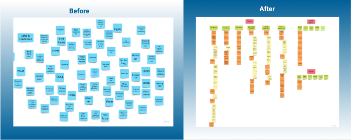

U.S. Department of Education Site Redesign Case Study
Project Description
The U.S. Department of Education (DoED) is an organization whose mission is to promote student achievement and preparation for global competitiveness. It was founded in 1979, and has supported over millions of students and their families to pay for college through post-secondary grants, loans, and work-study assistance It is committed to providing every child an equal and quality education.
- My Role: UX Researcher
The Problem
The Ed website is meant to promote and provide important educational information to users of all ages. However, the webpage aesthetically appears to be a visual information dumping ground with no clear structure to the content and struggled to engage and navigate users appropriately.
The Solution
The goal was to declutter the heavily loaded informative site by focusing on user-centric solutions and providing a seamless user experience when trying to find information without digging and investing time.
Research
Crafting Persona
We developed a user persona to understand who our user is and find out the user’s needs and challenges when visiting the U.S.Department of Education Website. This helped us to evaluate the website based on user needs.
User Path
Our persona is Maria, a busy teacher and a parent of two kids who will be joining college soon. She visits the Department of Education website to explore and find information for which she must navigate to different pages using different paths. The goals are:

- Learn about the Department and their services
- Find information about colleges and universities
- Learn about Student Loan eligibility for her children, who are non-citizens
- Locate the FAFSA to apply for aid
- Find additional resources for parents/families
Heuristic Evaluation
Upon performing the heuristic evaluation on main pages, it was observed that the site was outdated with poor aesthetics and layout. In addition, it was very wordy with no clear hierarchy and had less clarity in navigation.
Accessibility Test
Next, Color Accessibility test of the website was conducted in which some of the content and link colors did not pass the AA standards.
Usability Testing
We performed usability testing on different users to learn how people interacted with the site. We tried to find how easy it was for the users to get their targeted information and whether the current architecture made sense. We were also hoping to understand how an average person or a first-time user might approach the website. By interacting with participants, we understood the pain points and frustrations on the current site, which helped us prioritize the areas that required changes.
Navigation Analysis (Redline Annotation)
In the next step, we decided to redline the five main pages :home, Student Loans, Grants, Laws & Data. This helped us better understand the current navigation and develop some possible changes based on the heuristic and test result data.
Ideate
Information Architecture
Later, as we discussed and tested more on how to improve this website, we first began with I like, I wish, What if? from the data collected. We then voted and rated and came up with our most relevant features using 2 x 2 matrix.
Card Sorting
After doing an in-depth content audit, I conducted a card sorting activity. In this step, I simplified the navigation system to easily navigate to the crucial parts of the website. Card Sorting activity gave me a better understanding of grouping and organizing information based on its importance. It helped me define the navigation of the site. With this step my goal was to minimize the homepage contents by keeping the most frequently visited information and preserving other contents under appropriate and clear drop down menu labels. Also, I attempted to keep the footer very minimal since none of our testers used it during the tests. Based on the information gathered we were able to decide the main categories
SITEMAP
The usability testing of the current website gave insights into how information is perceived and the usability issues with the existing website. I observed the current website does not provide a clear intuitive navigation to users. It also helped me see more clearly how users preferred to navigate and which elements would be important to see, like recent news or updates. I used the organization of these cards to create the sitemap to address and solve the existing issues.
UI Style
I decided to follow the color scheme to create a consistent and to maintain the same voice throughout the site. However, slight variations of the original color palette were accommodated as per the color accessible test result. The new style tile focuses on creating an authoritative, intellectual and friendly brand feel to the redesigned prototype.
.Prototype & Tests
Navigation UI Prototype
Now that I had an idea of different pages and what they should include, using the site map as the guide I drew out some rough wireframe sketches, mainly focused on the key critical content/features pages and created low fi prototypes. A low-fi prototype was created on FIGMA representing all primary and secondary navigation pages. Below is the progression of some of the main screens from low fi to mid fi.
Responsive Desktop and Mobile Wireframes
The final iterated and redesigned desktop and mobile clickable Figma prototypes showcase a clear menu/navigation and a consistent, pleasing design with seamless information architecture to provide a better user experience while visiting the U.S. Department of Education.
Final User Testing & Results
I tested my prototype on 7 users including the users who participated in my original usability testing step. I used the same test plan that I used for the actual website to get more accurate comparison data. The responses were positive with very few suggested changes which are:
- I highlighted the “Login: menu to make it more prominent and separate it from other secondary menu options.
- I removed “Search for Schools & Colleges” from “Parents” as it was already included under “Schools & Colleges”.
Test Responses
Based on the feedback I received from users on the high fidelity prototype, I believe I was successful in the following points:
- During my User research analysis phase, I was able to identify the primary users and topics that are frequently searched for. Based on these findings, I categorized and reorganized the primary navigation menu to make it easier for users to find information that they are searching for.
- The users found the drop down menus to be very useful , though I was not able to complete all tertiary navigation and connect each element to their respective pages.
- I tried to make the navigation more precise regarding where users were on the site and navigate backward by adding breadcrumbs.
- I added a Contact Form to the Contact Us page to make it more convenient for users to contact.
- I added a carousel under the primary navigation, which brings excitement and gives some of the site’s essential features at a glance.
- I used the card component to display upcoming and past events to bring a lively vibe, which isn’t there on the actual site.


Conclusion
This was one of the biggest, overwhelming and significant projects I have worked on so far, and I truly enjoyed being challenged by this project. This process enhanced my learning experience and challenged me to redesign it to serve the purpose. Looking back on the whole process, redesigning this site, and working on this case study constantly reminded me that users are always the center of every design decision. Although I had a very short timeline for this project, I am glad to learn that even by making small changes, I was able to yield big impacts and create a great experience for users.
Saying that, I believe I have met the goal of simplifying the pages and finding a better way to display all the information so that users can easily find what they were looking for. From the user test data collected, the redesigned U.S. Department of Education prototype proves to be intuitive, clear, and displays all contents in a structured manner helping users easily navigate Department’s different services, providing a better search experience.
In conclusion, there is much room for improvement and in the future, I would like to revisit this project one day and spend more time understanding users’ needs, gains, and pain points to iterate and work on more content from the website.